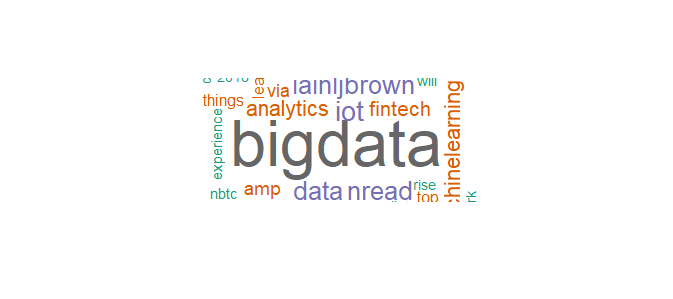

- Primeira alteração:
Onde se coleta os tweets, colocar o (lang = "en") para tratar o idioma específico em inglês.
Ex.: tweetData = searchTwitter("#BigData", n = 100, lang = "en")
Para posts em português, utilizar "pt": (lang = "pt")
- Segunda alteração:
Para converter os caracteres para "UTF-8", utilizar o seguinte código:
Ex.: tweetcorpus <- tm_map(tweetcorpus, function(x) iconv(enc2utf8(x), sub = "byte"))
- Terceira alteração:
Em alguns casos, o wordcloud está dando erro em uma função interna ("simple_triplet_matrix").
Eu resolvi passando o corpus novamente pela função Corpus:
Utilizar esse código antes da função wordcloud
Ex.: tweetcorpus <- Corpus(VectorSource(tweetcorpus))
Com isso conseguimos "rodar" o código até esta parte.
